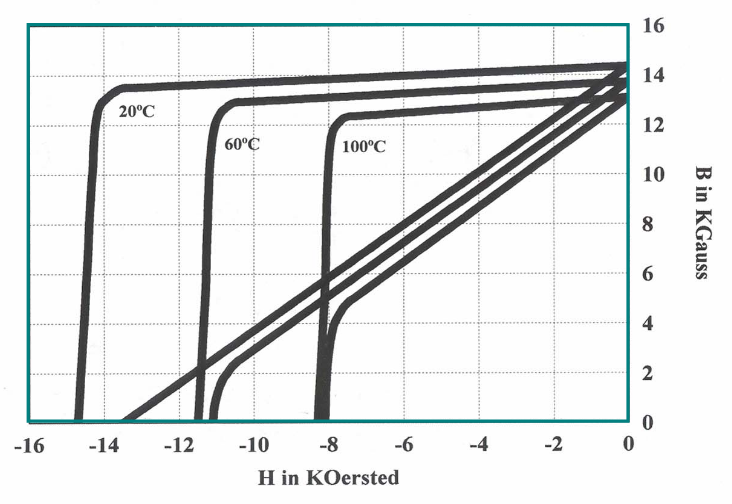

class: center, middle # EE-564 Design of Electrical Machines ## Ozan Keysan [ozan.keysan.me](http://ozan.keysan.me) Office: C-113 <span class="meta">•</span> Tel: 210 7586 --- # Materials Used in Electric Machines -- - ## Conductors (Copper, Aluminium) -- - ## Ferromagnets (Iron, Electrical Steel, Ferrites) -- - ## Permanent Magnets (NdFeB, Samarium-Cobalt) --- # Conductors ## Copper is usually the best choice, but aluminium can be preferred to reduce cost. -- - ## **Copper:** \\(1.68 \; 10^{-8} \; \Omega.m \\) -- - ## **Aluminium:** \\(2.82\; 10^{-8} \; \Omega.m \\) -- - ## **Silver:** \\(1.59 \; 10^{-8} \; \Omega.m \\) -- - ## **Gold:** \\(2.44 \; 10^{-8} \; \Omega.m \\) --- # Copper vs. Aluminium --  --- # Copper vs. Aluminium  --- # AC Resistance vs DC Resistance ## Which one is higher? -- - ## AC Resistance > DC Resistance --- # Skin Depth -- # Distribution of Current in a Wire --  --- # Skin Depth ### Due to circulating eddy currents  --- # Skin Depth # Current Distribution: \\( J = J_0 e ^{-d/\delta_s}\\) -- # Skin depth: \\(\delta_s = \sqrt{\frac{1}{\pi f \mu \sigma}}\\) --- # Skin Depth for Copper: -- - ## 50 Hz --> 9.3 mm -- - ## 1 kHz --> 2.1 mm -- - ## 10 kHz --> 0.66 mm -- - ## 100 kHz --> 0.21 mm -- - ## 1 MHz --> 66 um --- # How to increase conductor area without increasing thickness? ## Bundled Conductors --  --- # How to increase conductor area without increasing thickness? ## Foil Conductors --  --- ## Hollow Conductors -- <img src="http://sub.allaboutcircuits.com/images/52013.jpg" alt="Drawing" style="width: 400px;"/> --- # AC Resistance ## AC Resistance [Calculator](http://www.clemson.edu/ces/cvel/emc/calculators/Resistance_Calculator/round.html) -- ## Rule of Thumb: For 50 Hz power systems ## $$Rac \simeq 1.1 Rdc$$ --- # Temperature Effect <img src="http://www.wilko.com/content/ebiz/wilkinsonplus/invt/0316169/0316169_l.jpg" alt="Drawing" style="width: 500px;"/> ### How does the resistance change with time? --- # Temperature Effect ## Temperature Coefficient ## $$R(T) = R(T_0)(1 + \alpha\Delta T)$$ -- ### For copper (at 20 C) ### $$\alpha = 0.003862\;K^{-1}$$ [Ref1](http://hyperphysics.phy-astr.gsu.edu/hbase/tables/rstiv.html), [Ref2](http://en.wikipedia.org/wiki/Electrical_resistivity_and_conductivity) -- ## Resistivity of copper increases 30% from 20C to 100C. --- # Conductor Standard Sizes -- ## - American Wire Gauge (AWG) -- ## - National Electrical Manufacturers Association (NEMA) -- ## - International Electrotechnical Commission (IEC) --- # Conductor Standard Sizes -- ## A few References - ### [AWG](http://en.wikipedia.org/wiki/American_wire_gauge) - ### [AWG Sizes](http://www.engineersedge.com/copper_wire.htm) - ### [Magnet Wire Types](http://mwswire.com/magnet-wire/) - ### [MWS Wire Technical Data Book](http://mwswire.com/document-resource-center/) - ### [Bemka (tr) Wire Sizes](http://www.bemkawire.com.tr/en/home/content/251) - ### [NEMA Wire Catalogue](http://www.mwswire.com/pdf_files/mws_tech_book/TechBook040114.pdf) - ### [Current Ratings](http://www.batt.co.uk/upload/files/table4d1abs6004bs6231bs6346_1220253954.pdf) --- # Ferromagnets -- ## Electrical Steel Laminations <img src="http://is2.ecplaza.com/ecplaza2/products/6/6b/6b9/96679658/high-quality-silicon.jpg" alt="Drawing" style="width: 250px;"/> -- - ## Used for Low Frequency (50-500 Hz) -- - ## Easy to [manufacture](https://www.youtube.com/watch?v=qmg_W_pcYhY) & [Cheap](https://www.alibaba.com/product-detail/electrical-silicon-steel-laminates_1891355946.html) --- ## Electrical Steel Lamination Types -- ## - Silicon Steel (Electrical Steel)  -- - ### Added silicon increases the resistance (reduces eddy losses) --- ## Electrical Steel Lamination Types ### - Cold Rolled Lamination Steel <img src="http://retrorenovation.com/wp-content/uploads/2012/02/stainless-steel-countertop.jpg" alt="Drawing" style="width: 400px;"/> -- - ### Lowest Cost -- - ### Higher Core Losses --- ## Electrical Steel Lamination Types ### - Nickel Alloys <img src="http://i01.i.aliimg.com/photo/v2/1084596293/Nickel_Iron_alloy_1J79.jpg" alt="Drawing" style="width: 400px;"/> -- - ### Higher cost than silicon steel -- - ### High permeability, low core losses --- ## Electrical Steel Lamination Types ## - Cobalt Alloys <img src="http://www.aperam.com/alloysandspecialities/typo3temp/pics/5f302d128f.jpg" alt="Drawing" style="width: 300px;"/> -- - ### Highest cost -- - ### High saturation (up to 2.2 T) -- - ### Suitable for mass critic applications (aerospace, military) --- # Ferromagnets ## Motor Core Lamination Manufacturing - [Lamination Stamping-1](https://www.youtube.com/watch?v=RgWh2G-2XuU) - [Lamination Stamping-2](https://www.youtube.com/watch?v=dZ9FySos1t0) - [Lamination Stamping-3](https://www.youtube.com/watch?v=7kKjxHOdC1A) - [Lamination Stamping-4](https://www.youtube.com/watch?v=y0feSEkR3K4) - [Continuous Stamping](https://www.youtube.com/watch?v=dcjlH8eq0hM) --- # Ferromagnets ## Reading List-Catalogue - [Proto Laminations](http://www.protolam.com/page3.html) - [JFE Steel](http://www.jfe-steel.co.jp/en/products/electrical/catalog/f1e-001.pdf) - [Cogent Catalogue](http://perso.uclouvain.be/ernest.matagne/ELEC2311/T2006/NOFP.pdf) (page 5-6) - [Grain Oriented Steel Catalogue](https://www.atimetals.com/Documents/goes_technical_data2_v1.pdf) - [Enpay Transformer Core](http://www.travek.elektrozavod.ru/sites/default/files/images/production/enpay/Amorphous%20Core%20Catalogue.pdf) - [Sura Catalogue](http://www.sura.se/Sura/hp_main.nsf/startupFrameset?ReadForm) - [Cogent Elecrical Steel](https://cogent-power.com/products/non-oriented-electrical-steel/technical-specifications) - [VacuumSchemlze](http://www.vacuumschmelze.com/en/products/materials-parts/soft-magnetic.html) - [Motor Laminations](http://laminationspecialties.com/products.htm) --- # Core Loss in Laminations -- ## Hysteresis Loss + Eddy Current Loss <img src="http://info.ee.surrey.ac.uk/Workshop/advice/coils/BH_loss.png" alt="Drawing" style="width: 800px;"/> [Real Data-sheet of electrical steel](http://cogent-power.com/products/non-oriented-electrical-steel/magnetic-qualities) --- # Other Magnetic Materials: -- (Soft) Ferrite -- <img src="http://www.tomita-electric.com/mt/mt-static/themes/tomita/css/images/en/catimg-ferrite.jpg" alt="Drawing" style="width: 700px;"/> -- - ### Sintered Iron Oxide + Manganese/Zinc -- - ### Low Saturation Point (0.4-0.5 T) -- - ### Brittle -- - ### High Permeability (\\(\mu_r\\): 1500-3000) --- # (Soft) Ferrite Cores ## Used as [Chokes](https://www.youtube.com/watch?v=LuMlM8zWQFk) and Filters -- <img src="https://hottconsultants.files.wordpress.com/2014/03/ch05fg322.jpg" alt="Drawing" style="width: 500px;"/> <img src="https://images-na.ssl-images-amazon.com/images/I/51n5lh70xEL._SY355_.jpg" alt="Drawing" style="width: 200px;"/> --- #Quick Question -- ## Is it easier to store energy with high or low permeable material? -- ## \\(W = \dfrac{1}{2}\dfrac{Volume}{\mu} B^2 \\) ## Sometimes, air-gaps are added deliberately to increase energy storing capacity of a core. --- ## E-core without gap -- <img src="https://ae01.alicdn.com/kf/HTB1c2EbMVXXXXbDXVXXq6xXFXXXa/EE65B-font-b-E-b-font-shape-large-power-font-b-transformer-b-font-ferrite-font.jpg" alt="Drawing" style="width: 500px;"/> --- ## E-core with gap -- <img src="http://www.encyclopedia-magnetica.com/lib/exe/fetch.php/etd_core_gapped_magnetica.jpg" alt="Drawing" style="width: 500px;"/> --- ##Gapped Toroids <img src="http://www.hitachimetals.com/materials-products/amorphous-nanocrystalline/microlite-inductor-cores/images/gapped_toroids.jpg" alt="Drawing" style="width: 600px;"/> --- # A Better Solution? -- ## Distributed Gap Cores <img src="http://www.pocomagnetic.com/UpLoadFiles/20140418/2014041811474071.jpg" alt="Drawing" style="width: 600px;"/> ### Powder Core --- # Distributed Gap Cores -- - ## Low Permeability (\\(\mu_r\\): 20-200) -- - ## Has different types: -- - ## KOOL Mu Powder - ## MPP - ## Iron Powder --- ## KOOL Mu Powder Core <img src="https://www.mag-inc.com/Media/Magnetics/Image-Library/Product%20Images/Powder%20Core%20Images/Kool%20Mu/Kool-Mu-Shapes.png" alt="Drawing" style="width: 600px;"/> --- ## KOOL Mu Powder Core ### Lower Core Loss wrt Steel <img src="https://www.mag-inc.com/getattachment/Products/Powder-Cores/Kool-Mu-Cores/Large-Kool-Mu-Core-Shapes/Kool-Mu-and-Silicon-Steel-Comparison/KoolMuvsSiliconSteelLoss.png" alt="Drawing" style="width: 600px;"/> --- # Distributed Gap Cores <img src="https://www.mag-inc.com/getattachment/Products/Powder-Cores/Learn-More-about-Powder-Cores/PowderCoreOverviewMatrix.png" alt="Drawing" style="width: 400px;"/> --- # Distributed Gap vs. Gapped Ferrite -- <img src="https://www.mag-inc.com/getattachment/Products/Powder-Cores/Kool-Mu-Cores/Large-Kool-Mu-Core-Shapes/Kool-Mu-and-Gapped-Ferrite-Comparison/KoolMuvsFerrite.png" alt="Drawing" style="width: 700px;"/> ### [Comparison](https://www.mag-inc.com/Products/Powder-Cores/Learn-More-about-Powder-Cores/Gapped-Ferrite-Comparison) --- ## Distributed Gap vs. Gapped Ferrite -- - ## Fringing flux increases copper losses in gapped cores -- - ## Ferrite has sharp saturation, whereas powder cores has [soft saturation](https://www.mag-inc.com/getattachment/Products/Powder-Cores/Kool-Mu-Cores/Large-Kool-Mu-Core-Shapes/Kool-Mu-and-Gapped-Ferrite-Comparison/KoolMuvsFerriteDCBIAS.png) -- - ## Powder cores are usually smaller -- - ## Powder cores magnetic properties does not change much with temperature -- - ## But powder cores have higher inductance tolerances. --- # Design Exercise -- - ## Let's choose a [powder core toroid](https://www.mag-inc.com/Products/Powder-Cores/Kool-Mu-Cores) -- - ## [Toroid Core Example](https://www.mag-inc.com/Media/Magnetics/Datasheets/0077354A7.pdf) ### Useful Links - ### [Design Guides](https://www.mag-inc.com/Design/Design-Guides) - ### [Powder Core Loss Calculation](https://www.mag-inc.com/Design/Design-Guides/Powder-Core-Loss-Calculation) - ### [Powder Core Calculations](https://www.mag-inc.com/Design/Design-Guides/Powder-Core-Calculations) --- ## Amorphous and Nanocrystalline Laminations <img src="https://image.ec21.com/image/cnzhaojing/oimg_GC10207450_CA10207463/Amorphous-Metal-Core---Magnetic-Core.jpg" alt="Drawing" style="width: 300px;"/> - ## Very High Perbeability (\\(\mu_r\\): up to 10.000) - ## High Efficiency transformers (for medium frequency) - ## Expensive --- # Comparison of Materials <img src="http://nanoc.imr.tohoku.ac.jp/eng/image/research/roadmap2.png" alt="Drawing" style="width: 800px;"/> --- # Comparison of Materials <img src="http://www.nikkindenjikogyo.co.jp/images/merit02-english.png" alt="Drawing" style="width: 900px;"/> --- # More Reading Materials - ### [Soft Magnetic Core Application Notes](http://www.allegromicro.com/~/media/Files/Technical-Documents/Arnold/Soft-Magnetics-Applications-Guide.ashx?la=en) - ### [TI Magnetic Core Characteristics](http://www.ti.com/lit/ml/slup124/slup124.pdf) - ### [Practical and Potential Applications of Soft Magnetic Powder Cores](http://global-sei.com/technology/tr/bn82/pdf/82-02.pdf) - ### [Choice of the Magnetic Core](http://www.sirio-ic.com/index.php/en/i-magneticore-en.html) --- # Permanent Magnets -- ##Applications <img src="http://www.cndailymag.com/images/about/application.jpg" alt="Drawing" style="width: 500px;"/> ### [Why magnets attract each other?](http://www.youtube.com/watch?v=uTcuDprmues) by Richard Feynman --- # History <img src="http://www.magnetnrg.com/uploads/2/0/0/5/20054943/2633149.jpg" alt="Drawing" style="width: 800px;"/> --- # Neodymium Magnets (NdFeB) ### Strongest ### Expensive (250 TL/kg, £70/kg) <img src="http://upload.wikimedia.org/wikipedia/commons/thumb/4/4d/Neodymag.jpg/1024px-Neodymag.jpg" alt="Drawing" style="width: 400px;"/> [Levitating a man](http://www.youtube.com/watch?v=q9m-hHg0gFk), [Magnet smashing](http://www.youtube.com/watch?v=Vt8NOdINJ1s), [Crushing hand](http://www.youtube.com/watch?v=0t8yDnyOaQ8) --- # Magnetization Directions  --- #B-H Curve of a Magnet -- ## Desired Properties: ### Large retentivity (Remanence flux density) -- ### Large coercivity (point that crosses H axis) --  --- # Magnet Strength Comparison <img src="http://www.kjmagnetics.com/images/blog/demag.curves2d.gif" alt="Drawing" style="width: 600px;"/> --- # Magnet Grades -- - ## Specifies the magnet's max. energy (in MGOe) -- <img src="https://www.magnetsource.com/blog/wp-content/uploads/2015/12/Magnet-Grade-Chart-300x225.jpg" alt="Drawing" style="width: 500px;"/> --- # Magnet Grades - ## Specifies the max. operating temperature -- - #### N: 80 C - #### M: 100 C - #### H: 120 C - #### SH: 150 C - #### UH: 180 C - #### EH: 200 C - ## [Example Catalogue](https://www.first4magnets.com/tech-centre-i61/information-and-articles-i70/neodymium-magnet-information-i82/grades-of-neodymium-magnets-i92) --- ## Intrinsic vs Normal B-H Charateristics <img src="https://raw.githubusercontent.com/ozank/ozank.github.io/master/presentations/images/intrinsic.jpg" alt="Drawing" style="width: 360px;"/> ### We can only measure normal curve [More info about magnets](http://what-when-how.com/electric-motors/hard-magnetic-materials-permanent-magnets-electric-motors/), [Magnet Guide](http://www.allianceorg.com/pdfs/Magnet_Tutorial_v85_1.pdf), [Demagnetization](http://www.shinetsu-rare-earth-magnet.jp/e/design/) --- # Demagnetization of PMs <img src="https://www.kjmagnetics.com/images/blog/BHexplained.png" alt="Drawing" style="width: 600px;"/> ### If external magnetic fields get below the knee point, PM will lose strength --- # Demagnetization of PMs ## Recoil Line ### Magnets will loose strength if the reverse magnetic field goes beyon knee point. <img src="http://www.eeeguide.com/wp-content/uploads/2015/11/Application-of-Permanent-Magnet-Materials3.png" alt="Drawing" style="width: 600px;"/> --- # Magnetic Circuits with Magnets, Load Line ## Example [More info on load lines](https://ocw.mit.edu/courses/electrical-engineering-and-computer-science/6-061-introduction-to-electric-power-systems-spring-2011/readings/MIT6_061S11_ch11.pdf), --- # Magnets with Temperature ### Real Datasheet of Sm-Co (Samarium-Cobalt Magnet) <img src="http://www.x-magnet.net/hard-magnet/images/Sm2Co17-YX-30A-Demagnetization-Hysteresgraph.gif" alt="Drawing" style="width: 600px;"/> ### Magnets become less stable with increasing temperature. --- # Magnets with Temperature  ### NdFeB magnets lose around 0.1% Br for every degree C above 20 C, which is called reversible temperature coefficient. --- # What is Magnetic Force? ### [Why magnets attract each other?](http://www.youtube.com/watch?v=uTcuDprmues) by Richard Feynman ### [Magnets and Special Relativity](https://www.youtube.com/watch?v=1TKSfAkWWN0) Reading Suggestion: [Eminim Şaka Yapıyorsunuz Bay Feynman](http://www.idefix.com/Kitap/Eminim-Saka-Yapiyorsunuz-Bay-Feynman-Merakli-Bir-Sahsiyetin-Maceralari/Richard-P-Feynman/Bilim/Populer-Bilim/urunno=0000000427673) --- ## You can download this presentation from: [keysan.me/ee564](http://keysan.me/ee564)